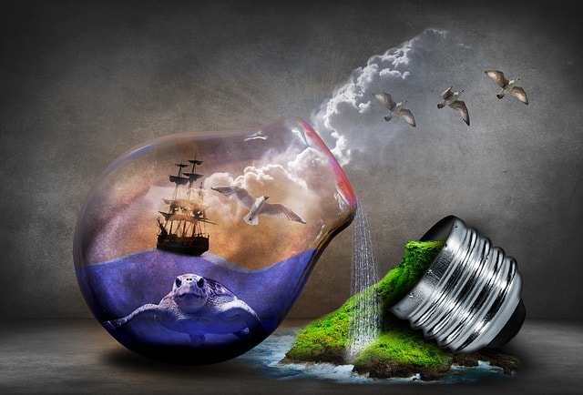

Reduce reuse and recycle this slogan has been with us for decades but we are still not doing what is required of us we are still chocking our planet with plastics and other none biodegradable materials.It is about time we choose the right panet and this is how wed do it:

We have been cutting down trees for decadeds ,this was concidered a necessary evil to provide room for building our cities and fuel for our industries.Although the age of using wood as a fuel are over trees are still cut for their bark and timber and the demand is still growing with the constant growth of our population.The most affected are some spieces of hard wood trees which are almost going extinct given they take hundeds of years to mature such as:Pennantia Baylisiana which is concidered to be the plant in the world with only one knowngrowing in the wild. We know for a fact that trees can grow with out us but we cannot live without them hence it should be in our best intrest to conserve this trees that play a huge role in our ecocystem.

The growth of a civilization can be measured by the amount of energy the can use and harnest from their surroundings. It is obvious that we have come a long way from the age where we mainly depended on wood and coal as a source of energy but countries such as South Africa use coal in their industries as a source of energy,but unfortunatly there is a much greater evil which is our dependancy on fossil fuels.When we burn fossil fuels the emit dangerous gases that contribute to the greenhouse effect which is a major cause of global warming.We should advocate for more cleaner and re-newable sources of energy such as sloar energy and nuclear fussion.


Polution due yo poor methods of waste disposal has become a real problem which is caused by mass prodution of plastics and other non biodegradable materials such as polyester.Scientist have warned us against impoper disposal of our waste. When we dump our waste in rivers which drain to the oceans it greatly disrapts the marine life causing animals such as whales and other small fish to choke on this plastics once ingested.We can prevent this buy following the slogan Reduce reuse and recycle. We can reduce by reducing the amount of plastics used in packaging and avoid using plastic bags.We can reuse by finding other use for our plastic bottles and tin cans.We can recycle by opening up recycling plants to turn the unreusable materials to other products.